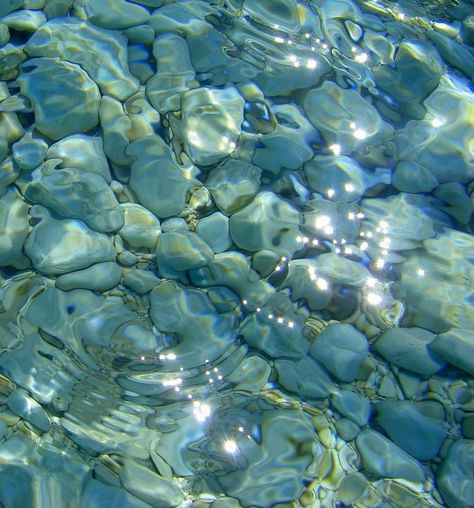

SDGs 4 yaitu pendidikan berkualitas dengan tujuan nomor empat dari 17 tujuan SDGs adalah pendidikan yang berkualitas yaitu menjamin kualitas pendidikan yang inklusif dan merata serta mempromosikan kesempatan belajar seumur hidup untuk semua orang.